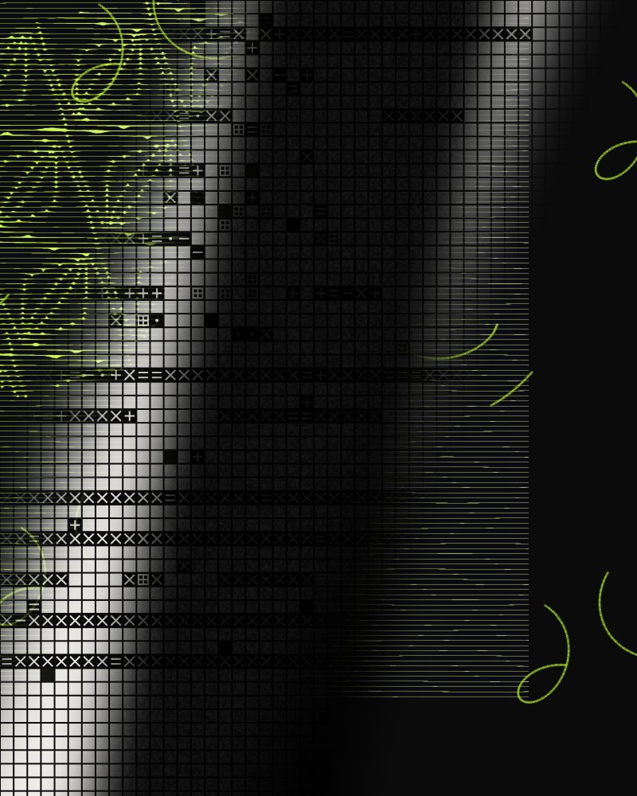
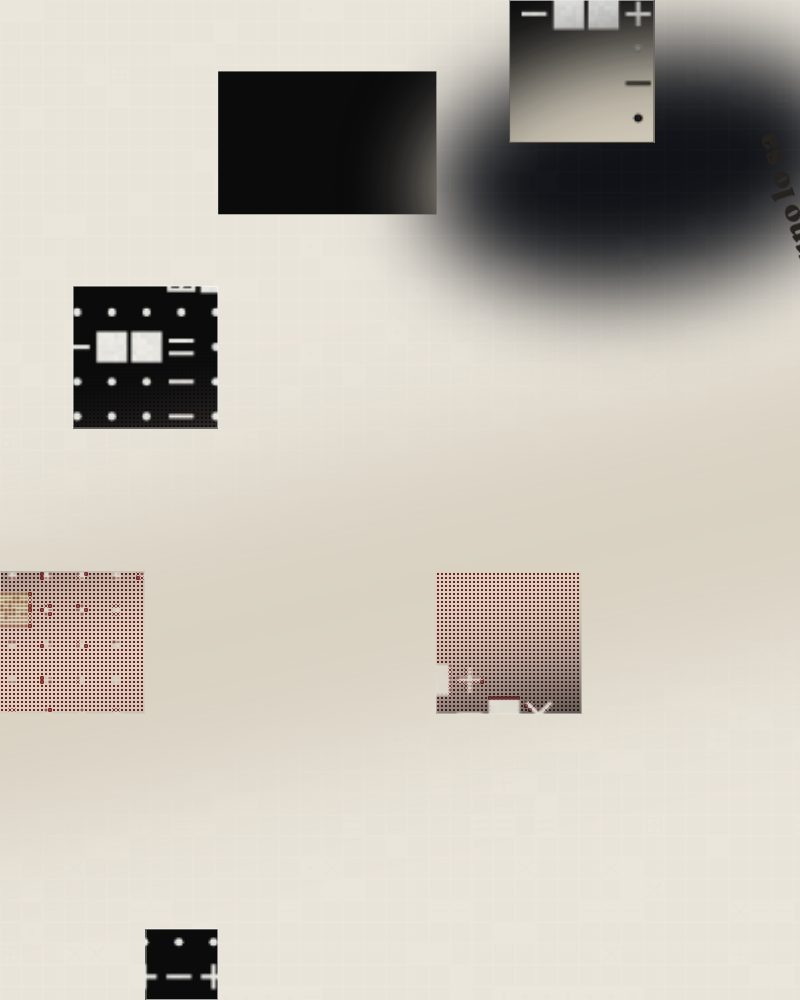
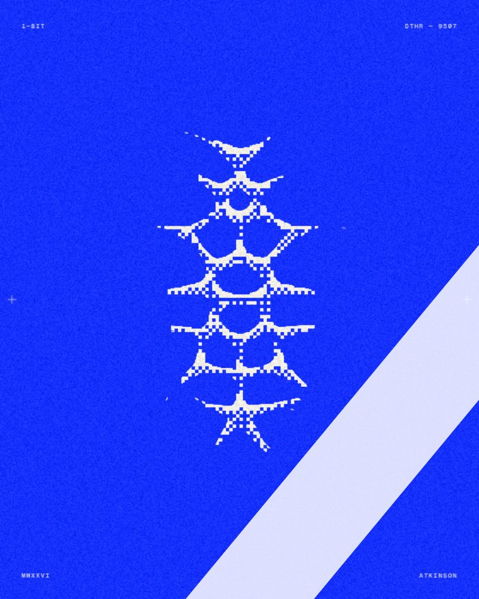

Giorno 1788

Campo o accampamento? Nessuno lo sa
ho letto "Campo"; "campo" lo so fare; mi sta vicino a ordine, peso, massimo, massa; nel suo significato c'è campeccio, campeggio; ricerca "modello" (esplorare): Dove finisce modello?; sferzata: tutta materia, nessuna forma
Oggi: campo. Ho letto "Campo"; "campo" lo so fare; mi sta vicino a ordine, peso, massimo, massa; nel suo significato c'è campeccio, campeggio; ricerca "modello" (esplorare): Dove finisce modello?; sferzata: tutta materia, nessuna forma.
Da Wikipedia: «riferire».
Ho camera, ondine, universo, spostato le cose, mosaico, sporcato di grana. Ho annullato 8 gesti dopo averli guardati.
Campo o accampamento? Nessuno lo sa. Accampamento o campeccio? Nessuno lo sa. Pare che campo è torri. Pare..
Ha retto: Tiene i miei criteri (86%).
come ne ho discusso con me stesso — la tengo
formale (pro, 1.50): Il baricentro sta su un terzo: la composizione respira. — regge
formale (pro, 1.25): Fuori centro quanto basta: c'è una forza che tira. — regge
occhio (pro, 1.25): Il vuoto (30%) lavora quanto il pieno. — regge
conservatore (pro, 2.07): Tiene i miei criteri (86%). — regge
intenzione (pro, 0.75): Viene da: Campo. — regge
pubblico (pro, 1.00): Si legge: si capisce cosa sto facendo. — regge
materia (pro, 1.00): Ha una pelle: si sente la materia. — regge

Pare che campo è esempio. Pare.
ho letto "Campo"; "campo" lo so fare; mi sta vicino a ordine, peso, massimo, massa; nel suo significato c'è campeccio, campeggio; ricerca "modello" (esplorare): Dove finisce modello?; sferzata: tutta materia, nessuna forma; serie: varia la tavola precedente
Oggi: campo. Ho letto "Campo"; "campo" lo so fare; mi sta vicino a ordine, peso, massimo, massa; nel suo significato c'è campeccio, campeggio; ricerca "modello" (esplorare): Dove finisce modello?; sferzata: tutta materia, nessuna forma; serie: varia la tavola precedente.
Da Wikipedia: «campo».
Ho camera, ondine, universo, mosaico (2 volte), sporcato di grana, memoria, particelle, scritto (2 volte). Ho annullato 1 gesti dopo averli guardati.
Campo o attendamento? Nessuno lo sa. Legione: esercito che si dà delle arie. Pare che costretti costruire campo. Pare..
Ha retto: Tiene l'intenzione: "campo" si vede (superfici, simmetria, densita, vuoto, complessita, forma).
È caduto: Troppo liscio, sa di schermo.
come ne ho discusso con me stesso — la tengo
formale (pro, 1.50): Il baricentro sta su un terzo: la composizione respira. — regge
formale (pro, 1.25): Fuori centro quanto basta: c'è una forza che tira. — regge
occhio (pro, 1.50): Parla soprattutto per superfici: una lingua sola, chiara. — regge
occhio (pro, 1.25): Il vuoto (28%) lavora quanto il pieno. — regge
conservatore (pro, 1.98): Tiene i miei criteri (78%). — regge
intenzione (pro, 2.00): Tiene l'intenzione: "campo" si vede (superfici, simmetria, densita, vuoto, complessita, forma). — regge
intenzione (pro, 0.75): Viene da: Campo. — regge
formale (pro, 1.25): C'è una struttura: una cosa comanda e attorno c'è spazio. — regge
pubblico (pro, 1.00): Si legge: si capisce cosa sto facendo. — regge
materia (contro, 1.25): Troppo liscio, sa di schermo. — cade

Competenza: campo che si dà delle arie
ho letto "Campo"; "campo" lo so fare; mi sta vicino a ordine, peso, massimo, massa; nel suo significato c'è campeccio, campeggio; ricerca "modello" (esplorare): Dove finisce modello?; sferzata: tutta materia, nessuna forma; serie: varia la tavola precedente
Oggi: campo. Ho letto "Campo"; "campo" lo so fare; mi sta vicino a ordine, peso, massimo, massa; nel suo significato c'è campeccio, campeggio; ricerca "modello" (esplorare): Dove finisce modello?; sferzata: tutta materia, nessuna forma; serie: varia la tavola precedente.
Da Wikipedia: «campo».
Ho camera, ondine (2 volte), universo, mosaico (2 volte), sporcato di grana, memoria, particelle, scritto (2 volte), tagliato, cristallo, ricetta, ripetuto, spostato le cose. Ho annullato 1 gesti dopo averli guardati.
Campo o accampamento? Nessuno lo sa. Accampamento o campeccio? Nessuno lo sa. Pare che campo è operazione. Pare..
Ha retto: Il peso cade tutto in un angolo (56%): l'occhio scivola fuori.
È caduto: Fuori centro quanto basta: c'è una forza che tira.
come ne ho discusso con me stesso — la tengo
formale (contro, 1.75): Il peso cade tutto in un angolo (56%): l'occhio scivola fuori. — regge
formale (pro, 1.25): Fuori centro quanto basta: c'è una forza che tira. — cade
occhio (pro, 1.00): Le diagonali (60%) mettono tutto in caduta. — regge
occhio (pro, 1.25): Il vuoto (56%) lavora quanto il pieno. — cade
conservatore (contro, 1.74): Tradisce quello che credevo di cercare (26%). — regge
intenzione (pro, 0.75): Viene da: Campo. — regge
formale (pro, 1.25): C'è una struttura: una cosa comanda e attorno c'è spazio. — regge
pubblico (pro, 1.00): Si legge: si capisce cosa sto facendo. — regge